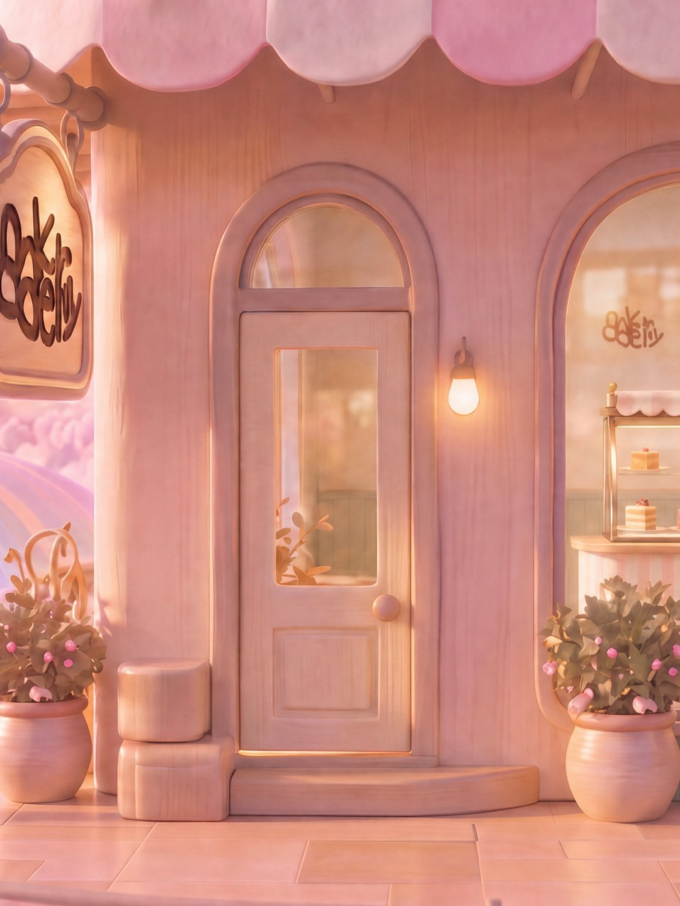
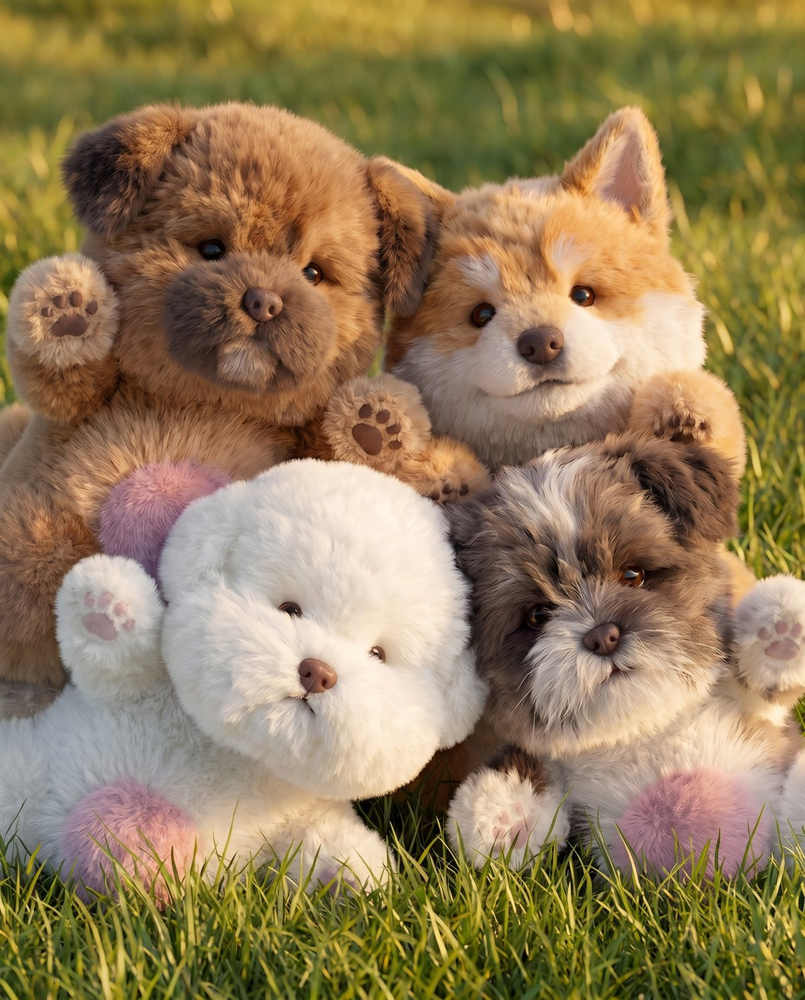
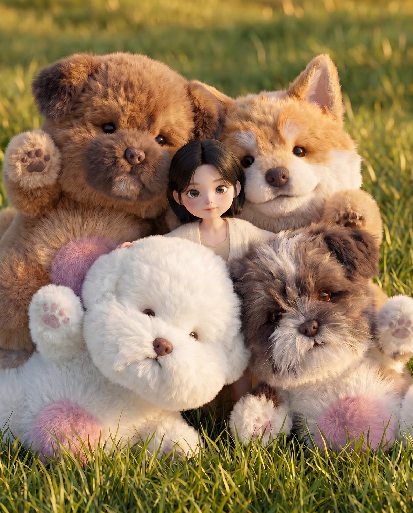
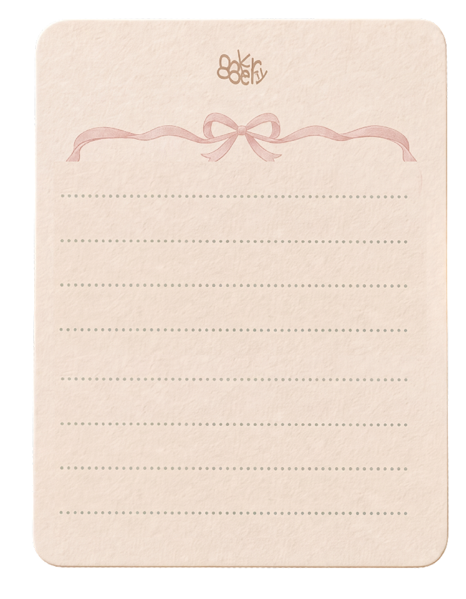

2026 AI CREATOR SHOW · NCA
기다릴게,
이름을
아이들에게 행복한 하루를 선물해주세요.
우리 베이커리에는 행복한 시간을 기다리는 친구들이 있어요.
방이가 오늘 나와 가장 잘 맞는 친구를 소개해줄 거예요.
내 휴대폰에서 만나는 8akeryy · 앱 설치 없이 참여해요

- 01오늘의 친구 찾기방이와 나누는 이야기
- 02게임 라운지친구와 함께 보내는 하루
- 03AI 포토부스강아지들 사이, 오늘의 손님
- 04편지 남기기오늘 함께한 아이에게
기다릴게, 이름을
8akeryy · 오늘의 친구 찾기
01 · 오늘의 친구 찾기
방이
고마워, 이제 알 것 같아!
음… 누가 좋을까……
방이가 오늘의 친구를 떠올리고 있어요.
오늘 함께할 친구
02 · 게임 라운지
친구와 함께 보내는 하루
휴대폰을 가로로 돌리고 ‘크게 보기’를 누르면 더 편하게 즐길 수 있어요.
게임을 마치면 사진으로 이동해주세요.
다른 단계로 이동하면 게임이 종료되고, 다시 들어오면 처음부터 시작해요.
03 · AI 포토부스
강아지들 사이에
폭, 파묻혀 볼까요?
사진을 찍으면 8akeryy 화풍의 치비 캐릭터로 변신!
몽글몽글 강아지들 틈에 쏙 들어간 나를 만나보세요.


포토부스 연결을 확인하고 있어요.
이 사진으로 강아지 친구들과 함께할게요.
강아지들 사이로 폭, 파묻히는 중…
사진을 만드는 동안 이 화면에서 기다려주세요.
선택한 사진과 완성 사진은 이 탭을 떠나기 전에 저장해주세요.
04 · 나가는 길
마음 가는 대로,
편지 한 통
짧은 안부도, 문득 떠오른 기억도.
누구에게든, 어떤 이야기든 자유롭게 남겨주세요.

8AKERYY · 기다릴게, 이름을
오늘 하루, 행복한 시간을
선물해줘서 고마워.
당신이 이름을 불러주는 순간,
기다림이 시작됩니다.
새로 시작하면 이 탭의 사진과 체험 기록이 지워져요.
간직할 사진과 편지는 먼저 저장해주세요.